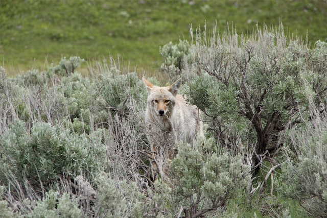
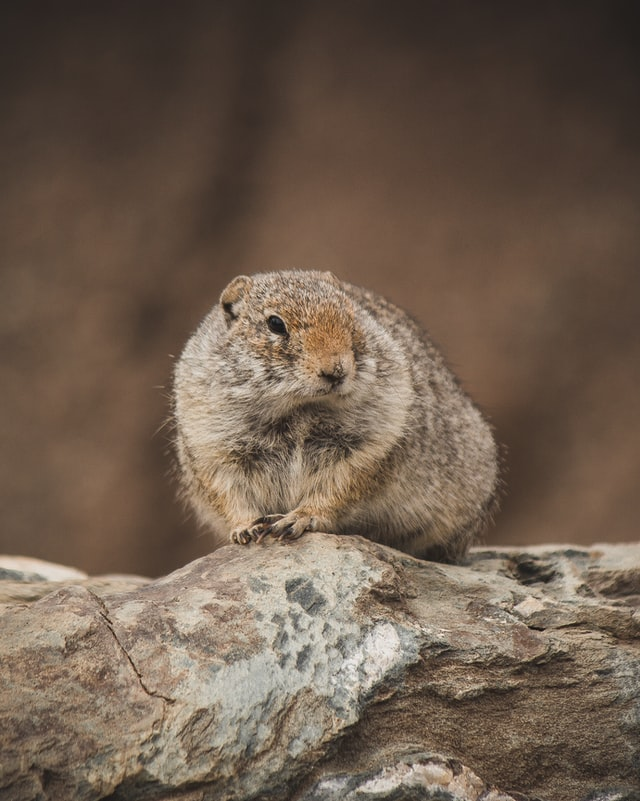
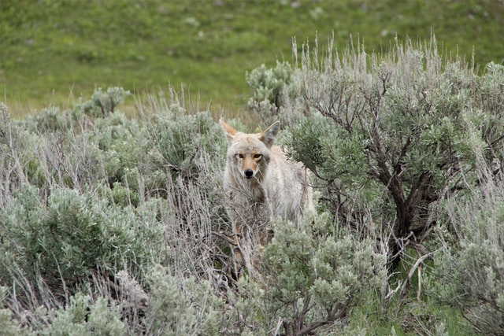
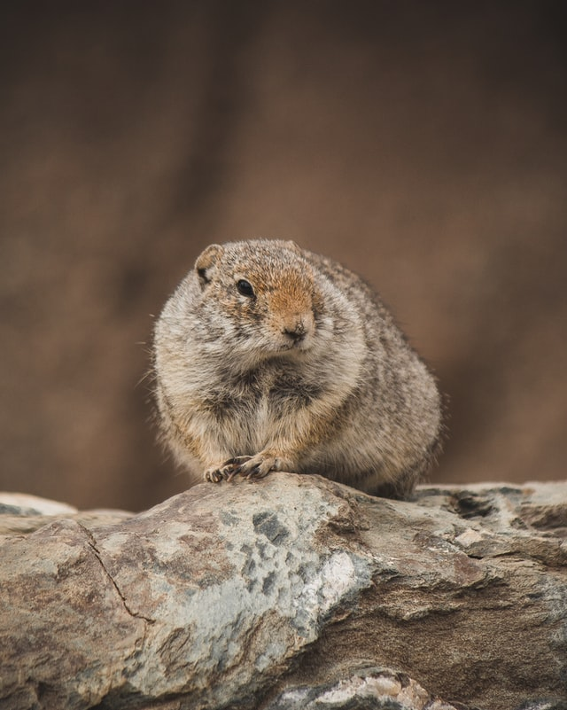

Yellowstone Guided Tours
Yellowstone Guided Tours
This workshop will be focusing on Yellowstone in the springtime, which includes abundant wildlife, newborn wildlife and bears. This workshop will start and end in Bozeman, MT, making a large loop in through the West Entrance and out the North Entrance.
As the snow breaks away from the high country, the lowlands are starting to burst with color from the wildflowers. The wildlife is still quite abundant, and many great shots are likely on this adventure.
(Last week of May: End on Sunday of Memorial Day weekend 2021-2023)
Day 1: Arrive at Bozeman, MT, transfer to the 320 Ranch. We will begin with and early morning sunrise and a look for wildlife in Yellowstone’s Gallatin District. After traveling in the West Entrance, we will spend the day in Yellowstone’s thermal areas. We will take advantage of the evening steam, and some of the park’s lesser-known features. On this night we will return to West Yellowstone
Day 2: We will kick off this morning with a quick early morning drive to the Hayden valley to look for bears and wolves, continuing to the park’s East Entrance. This day will also be spent catching the rainbow in the spray of the famed Lower Falls. We also have the opportunity to take some good mudpot photos and depending on the wildlife, we may get a great sunset from Lake Butte Overlook. On this night we will stay outside the East Entrance.
Day 3: This day begins with an early morning search for bears and wolves on the East Entrance Road and the Hayden Valley. This day is traditionally the opening day for Dunraven Pass, where we will take in great views and Tower Falls (if open). We will take in the evening wildlife in the Lamar Valley before heading to our rooms in Cooke City, MT for the night.
Day 4: We will begin again with early morning wildlife. This day will focus entirely on wildlife in the park’s Northern Range. There will be a great variety of wildlife in this area of the park, with the opportunity for some great wildlife encounters. This day will end in Gardiner, MT.
Day 5: Sunrise photos at Mammoth Hot Springs will kick of the day, with a spin up to Swan Lake Flats to look for wildlife and scenery shots. We will look for some of the area’s lower elevation animals in the Stephen’s Creek District and Paradise Valley as we work our way back to Bozeman, MT

 



Rates include 5 full days in the photography workshop, lodging of 1 night in Big Sky, MT; West Yellowstone, MT; Wapiti, WY; Cooke City, MT; Gardiner, MT and Bozeman, MT (a total of 6 nights), park entrance fees, and all taxes.
Rates do not include airfare, meals or guide’s gratuities.